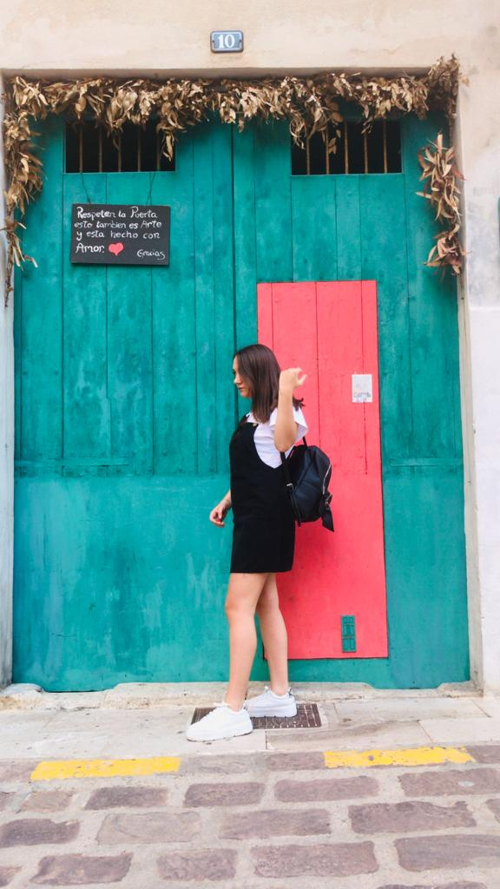
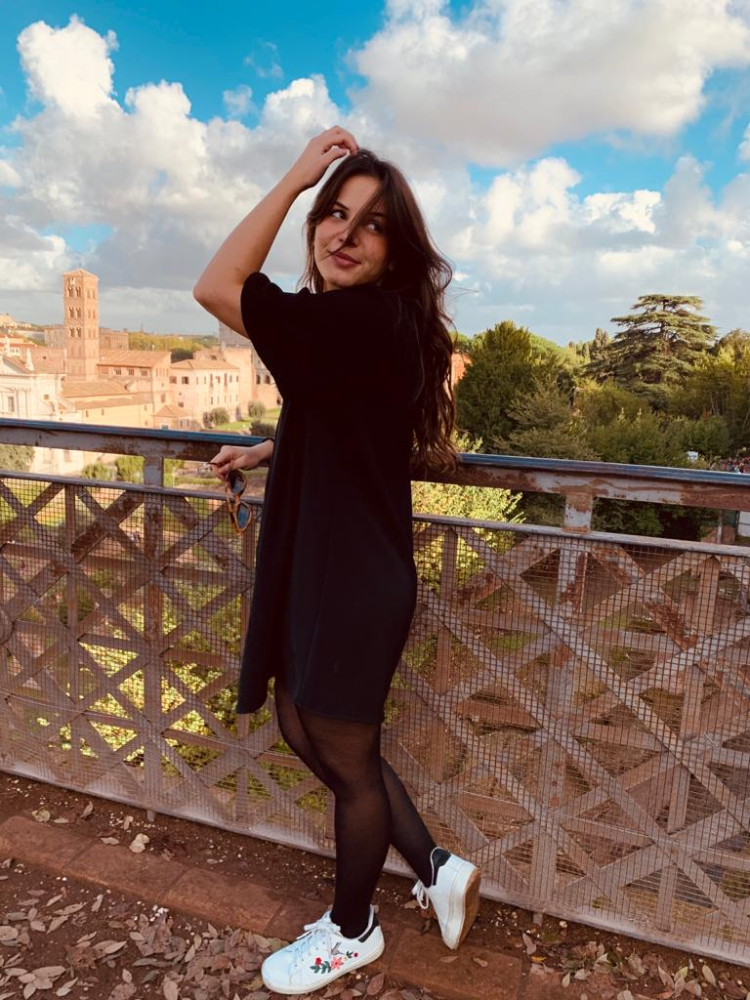

TEAM DI TRAVEL TO PARADISE
Jessica Turdo, 23 anni, studentessa. Amante della fotografia, dei viaggi, della lettura, della storia e dell'arte passa gran parte del suo tempo ad unire tutte queste passioni. Le piace immortalare stralci di vita quotidiana ma durante i suoi viaggi ciò che attira spesso la sua attenzione sono i piccoli dettagli, ciò che rende un paesaggio singolare, un'opera unica nel suo genere! Jessica ha girato diversi Paesi, la sua voglia di viaggiare le è stata trasmessa dal padre, infatti sin da piccola non è mai mancata la possibilità di concedersi qualche gita. Oggi ha deciso di raccontare, insieme al resto del team, le sue esperienze, gli aspetti positivi e negativi delle mete conosciute, i lati artistici e storici di luoghi che hanno per sempre segnato la sua vita.
Simona Lanzarone, 21 anni, studentessa. Amante della ricerca, dell’avventura e di tutto ciò che riguarda la natura; lei è una viaggiatrice atipica, di quelli che prendono il viaggio seriamente: il viaggio con la “V” maiuscola, un’esperienza di vita cruciale perché aiuta a scolpire il nostro carattere, a tirare fuori il meglio di noi e anche a cambiare la nostra vita. Scrive tutto ciò che la colpisce di un viaggio, infatti porta sempre con sè una piccola agenda dove si appunta tutti i piccoli dettagli di ogni luogo e racconta accuratamente le sue esperienze cercando di trasmettere a tutti le emozione che lei stessa ha provato. Sostiene che le città sono sempre state come le persone, esse mostrano le loro diverse personalità al viaggiatore. A seconda della città o del viaggiatore, può scoccare un amore reciproco, o un’antipatia, un’amicizia o inimicizia. Solo attraverso i viaggi possiamo sapere dove c’è qualcosa che ci appartiene oppure no, dove siamo amati e dove siamo rifiutati. Adesso Simona insieme al suo team vi racconterà perché vale la pena viaggiare proponendo e raccontando alcune mete che meritano di essere visitate.
Miriam Di Liberti,21 anni, studentessa Amante della curiosità e di tutto ciò che può arricchirla,farla crescere e conoscere. Il viaggio parte da un’infinita voglia di esplorare ma sopratutto di esplorarsi ed è proprio questo che i pochi o tanti viaggi che ha fatto le hanno concesso :” La voglia di ritrovare se stessa”. La sua personale definizione di viaggio è l’espressione di un “Dolce viaggiare” un momento della vita in cui si abbandona alla scoperta di luoghi e posti sconosciuti senza pensieri, con la sola voglia di lasciarsi andare alle emozioni che ogni posto suscita dentro di se. E proprio per questo,oggi, insieme al suo team ha deciso di raccontare alcuni dei viaggi intrapresi insieme ai luoghi artistici e storici che l’hanno particolarmente segnata.